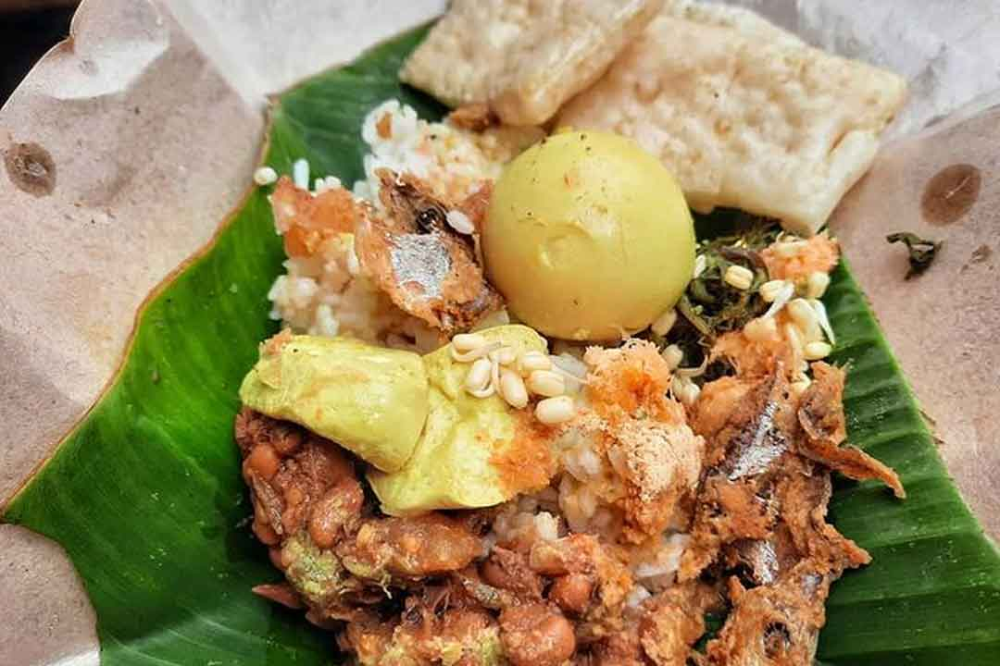
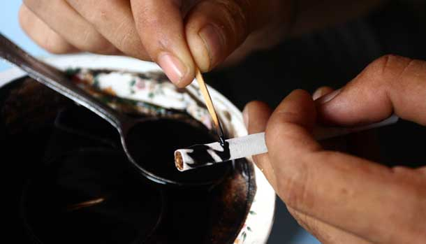

Lodho Ayam Bakar
Made from grilled chicken seasoned with a yellow spice blend and a special combination of herbs and spices. Its delicious flavor can be quite addictive. This dish is also easy to find in almost every corner of Tulungagung.
Every region has its own traditional foods that are an important part of its local identity and culture. Here is one of the traditional foods from my hometown.
Made from grilled chicken seasoned with a yellow spice blend and a special combination of herbs and spices. Its delicious flavor can be quite addictive. This dish is also easy to find in almost every corner of Tulungagung.

Made from simple ingredients such as glutinous rice, coconut, granulated sugar, and sweetened condensed milk. Despite its simple ingredients, this traditional food has a deliciously sweet and rich flavor.

Sompil is served with lontong, accompanied by vegetables cooked in lodeh sauce. It is then topped with powdered soybeans and peyek kacang, a traditional crispy peanut cracker. This dish is delicious and can be easily found throughout Tulungagung.

Capar Tape is made from fermented cassava, or tape, combined with boiled bean sprouts and topped with peanut sauce. This combination has also led Capar Tape to be known as a type of pecel. The preparation process is relatively simple, yet the result is a delicious dish. For some people, its flavor may seem unusual because it combines salty, sweet, and savory tastes in one dish.

Nasi Patik is served with urap and sayur lodeh, accompanied by chicken and eggs. It is traditionally served on banana leaves or teak leaves, which enhance the aroma and make the dish even more enjoyable.

Tulungagung is known as the “City of Cethe” for a reason. The word “cethe” itself means coffee grounds in Javanese. Cethe, also known as nyethe, is the traditional art of applying coffee grounds onto cigarettes to create intricate patterns, similar to the art of batik.